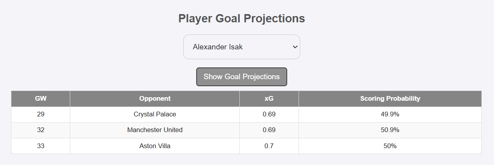
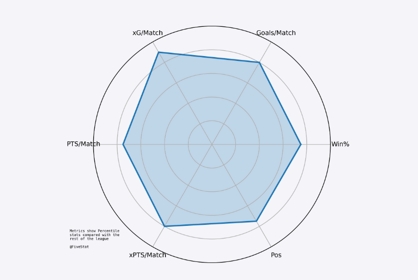
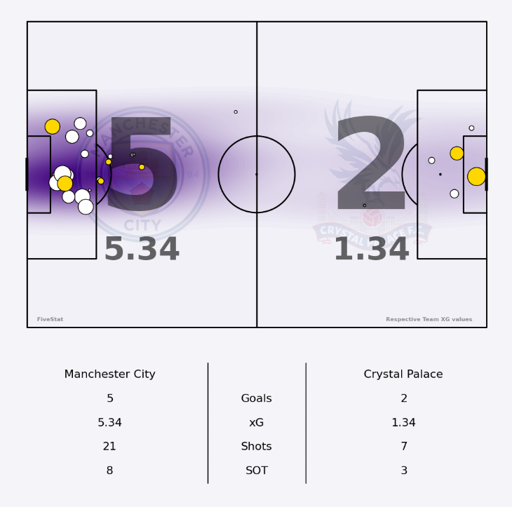

What Are We Trying to Achieve?
At FiveStat, the mission is to turn raw football data into data-driven predictions and visuals.
We:
- Forecast match scorelines and outcomes
- Simulate the entire season to project final league standings
- Estimate player-specific metrics, such as goal scoring probabilities
- Visualize the strengths and weaknesses of teams and players
Our models provide probabilities for:
- Each scoreline in a fixture (0-0, 1-0, 2-1...)
- Match results (Win, Draw, Loss)
- Final league positions (from 10,000 simulations)
- Player goalscoring probabilities in upcoming matches
Data Used in the Models
We collect and engineer a wide range of data
Which Models We Use
1. Poisson Regression for our Match Predictions
Purpose : To Project how many goals each team will score in a given fixture
How It Works: A Poisson Distribution calculates the probability of scoring n goals when the expected goals (xG) for each team is known.
We calculate each team’s Attack and Defense Ratings using:
- Historical data (2016–2024)
- Recent Team Form
- Home/Away Performance
- Team Momentum & Efficiency
Think of a Poisson dist as rolling a weighted dice where the most likely outcome is known. Because of this, we can center the dist around the team's average xG.
Example: If Arsenal has a 1.6 xG and Chelsea 1.2 xG, the model can give:
Ipswich 0 goals: ~19%
Ipswich 1 goal: ~31%
...
Spurs 2 goals: ~25%, etc.
We can multiply each of the home and away goal probabilities to get the probability of each scoreline:
Ipswich 1 - 2 Spurs: ~7.8%
 Why Poisson?
Why Poisson?
- Well-suited to discrete events like goals
- Widely used in sports analytics
- Easy to extend for full match score simulation
2. Monte Carlo Simulation for League Positions
Purpose:Forecast the final league table based on predicted match outcomes
How It Works:
- For each unplayed match, simulate the result based on Poisson-generated win/draw/loss probabilities
- Repeat this 10,000 times
- Tally each team's finishing position
Think of it Like playing out a season 10,000 times on Football Manager and recording where everyone finishes.
What We Produce:
- The probability (%) that each team finishes 1st, 2nd, ..., 20th
- Final xPTS = Current Points + Average Points in Simulations

Player Goal Predictions
We project a player's goal probability based on their xG share and team xG forecast in a given fixture.
- We can identify the quality of a players goalscoring oppertunities using their xG data
- We know the Teams projected xG for the upcoming games thanks to our Poisson distribution model
- We can then simulate Expected Goals (xG) and Scoring Probability (%) per match

We can think of it like giving each player their own mini match simulation
Radar Charts & Team Shotmaps
We visualize team & player profile stats using percentile-based radar charts and shotmap visuals.
Team Radar Charts
- Metrics: Win %, Goals/Match, xG/Match, PTS/Match, etc.
- Each value is turned into a percentile vs league peers

Shotmaps
- Use real-world data to display shot locations & xG quality
- Normalize all shots so they face one direction for consistency

The Pipeline Behind the Scenes:
- Data processing & cleaning
- Model calculation
- Charts, Heatmaps & Shotmaps generation
- Web app rendering (Flask + HTML templates)
We try to ensure the entire model is refreshed regularly to reflect real-time data - no stale stats here!
 }})